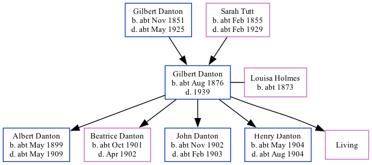

Gilbert Edmund Danton cAug 1876 - 1939
[ Home ] | [ Calendar ] | [ Surnames Index ] | [ Family History ]The child of Gilbert Danton (a gas stoker) and Sarah Tutt, Gilbert Danton, the first cousin twice-removed on the father's side of Nigel Horne, was born in Margate, Kent, England c. Aug 18761,2,3,4,5,6,7, was baptized in Ramsgate, Kent, England on Oct 29, 1876 and married Louisa Holmes (with whom he had 5 children: Albert Victor, Beatrice Maud, John William, Henry Thomas and Eleanor Susannah, along with 1 surviving child) in West Ham, Essex, England around Nov 18968.
Throughout his life, Gilbert lived in several places: in St Lawrence, Thanet, Kent, England in 18811; in Camberwell, London, England in 18912; at Ledbury Street, Peckham, London on Apr 5, 18919; in St Lawrence in 19013 (the same place as his father had been living in 1881); and in West Ham on Apr 2, 19114.
He died in 1939 in Essex6 (jul/Aug/Sep).
Parents
- Gilbert Johnson was born c. Nov 1851
- Sarah Maria was born c. Feb 1855
Children
- Albert Victor was born c. May 1899
- Beatrice Maud was born c. Oct 1901
- John William was born c. Nov 1902
- Henry Thomas was born c. May 1904
Citations
- 1881 England Census Online publication - Provo, UT, USA: The Generations Network, Inc., 2004. 1881 British Isles Census Index provided by The Church of Jesus Christ of Latter-day Saints © Copyright 1999 Intellectual Reserve, Inc. All rights reserved. All use is subject to the (Relation to Head of House: Son)
- 1891 England Census Online publication - Provo, UT, USA: The Generations Network, Inc., 2005.Original data - Census Returns of England and Wales, 1891. Kew, Surrey, England: The National Archives of the UK (TNA): Public Record Office (PRO), 1891. Data imaged from The National (Relation to Head of House: Son)
- 1901 England Census Online publication - Provo, UT, USA: The Generations Network, Inc., 2005.Original data - Census Returns of England and Wales, 1901. Kew, Surrey, England: The National Archives of the UK (TNA): Public Record Office (PRO), 1901. Data imaged from the National (Relation to Head of House: Visitor)
- 1911 England Census Online publication - Provo, UT, USA: Ancestry.com Operations, Inc., 2011.Original data - Census Returns of England and Wales, 1911. Kew, Surrey, England: The National Archives of the UK (TNA), 1911. Data imaged from the National Archives, London, England. (Marital Status: MarriedRelation to Head of House: Head)
- England & Wales births 1837-2006 - Findmypast
- England & Wales, Death Index: 1984-2005 Online publication - Provo, UT, USA: The Generations Network, Inc., 2007.Original data - General Register Office. England and Wales Civil Registration Indexes. London, England: General Register Office. © Crown copyright. Published by permission of the Cont
- England & Wales, FreeBMD Birth Index, 1837-1915 Online publication - Provo, UT, USA: The Generations Network, Inc., 2006.Original data - General Register Office. England and Wales Civil Registration Indexes. London, England: General Register Office. © Crown copyright. Published by permission of the Cont
- 1911 England Census Online publication - Provo, UT, USA: Ancestry.com Operations, Inc., 2011.Original data - Census Returns of England and Wales, 1911. Kew, Surrey, England: The National Archives of the UK (TNA), 1911. Data imaged from the National Archives, London, England.
- 1891 England, Wales & Scotland Census - Findmypast (was age 14 and the son of the head of the household)
Media
England & Wales births 1837-2006 - BMD/B/1876/3/AZ/000137/191
1891 England, Wales & Scotland Census - GBC/1891/0004077286
Kent Baptisms - GBPRS/CANT/B/96752544
England Births & Baptisms 1538-1975 - R_884614841
England & Wales marriages 1837-2005 - BMD/M/1896/4/AZ/000090/222
Family Tree
Generated by Ged2Site. Last updated on Jul 20, 2025